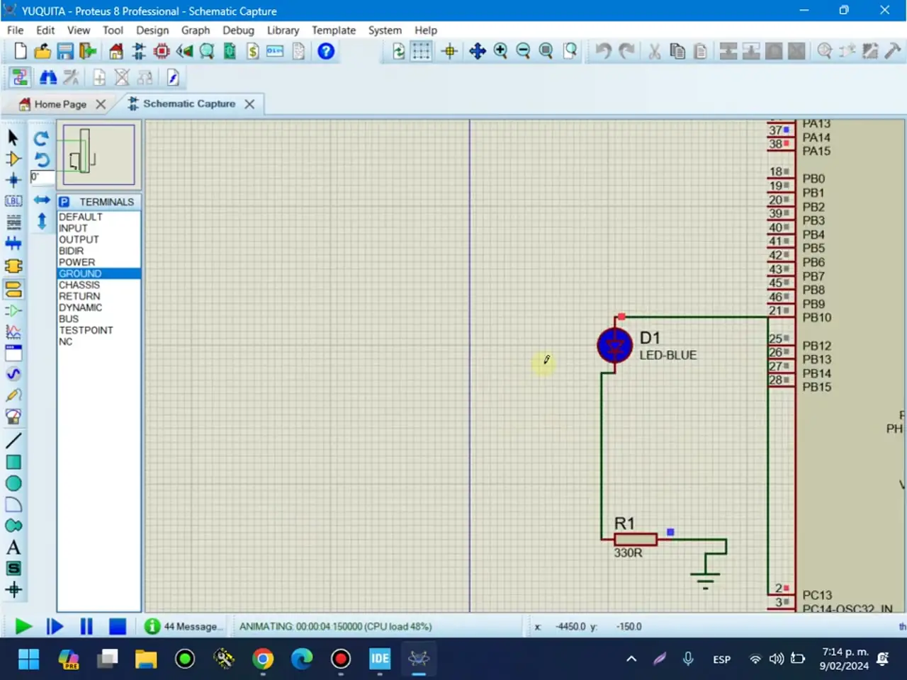

Abre STM32CubeIDE y deja el workspace por defecto.
Ve a File → New → STM32 Project. Se abre el Target Selector.
Primera clase del semestre 2024-I. Se crea un proyecto en STM32CubeIDE para el STM32F401CCU6, se configura un pin como GPIO_Output con una etiqueta de usuario, se escribe el parpadeo con las funciones HAL dentro del while(1), se activa la generación del archivo .hex y se arma en Proteus el circuito con el micro, un LED y una resistencia de 330 Ω para simularlo.

Abre STM32CubeIDE y deja el workspace por defecto.
Ve a File → New → STM32 Project. Se abre el Target Selector.
En Commercial Part Number escribe STM32F401CCU6 (el micro de la Black Pill).
Márcalo como favorito con la estrella para encontrarlo rápido en los próximos proyectos y pulsa Next.
Escribe un nombre sin espacios, sin ñ y sin caracteres raros.
Desmarca Use default location y crea una carpeta propia (por ejemplo en el Escritorio) para tener el proyecto a mano. Lenguaje: C.
Cierra los proyectos que no estés usando para no confundirte de main.c.
Un nombre con espacios o tildes da errores al compilar o al generar el código.
Los pines se agrupan en puertos PA, PB, PC y PH; el número después de la letra es el bit dentro del puerto (PA5 = bit 5 del puerto A).
Haz clic sobre un pin para ver todas sus funciones posibles.
Elige GPIO_Output. El pin se pone verde y aparece un pequeño clip: queda fijado a esa función.
Con Ctrl + arrastrar puedes mover la función a otro pin compatible.
Clic derecho sobre el pin → Enter User Label y escribe un nombre (en clase se usó arroz).
CubeIDE genera las constantes arroz_Pin y arroz_GPIO_Port para usar en el código.
El LED integrado de la Black Pill está en PC13. Consulta el pinout de la placa para ver qué pines son libres.
Guarda el .ioc para generar el código. El archivo está en Core → Src → main.c.
Si se desordena la vista: Window → Perspective → Reset Perspective. Con Ctrl + / Ctrl - cambias el tamaño de la letra.
Todo tu código va entre los comentarios USER CODE BEGIN y USER CODE END; lo que esté fuera se borra al regenerar desde el .ioc.
El ciclo infinito es el while (1).
HAL es la capa de abstracción de hardware de ST. Escribe HAL_GPIO_ y pulsa Ctrl + Espacio para ver las funciones disponibles.
Invierte el pin y espera 600 ms dentro del while.
Sin el retardo el LED cambia tan rápido que se ve siempre encendido (por encima de unos 60 Hz el ojo no distingue el parpadeo).
while (1)
{
HAL_GPIO_TogglePin(arroz_GPIO_Port, arroz_Pin);
HAL_Delay(600);
}Compila con el martillo (configuración Debug).
Para el archivo .hex: clic derecho en el proyecto → Properties → C/C++ Build → Settings → MCU Post build outputs → marca Convert to Intel Hex file. El .hex queda en la carpeta Debug.
En Proteus abre el selector de componentes y busca STM32: aparecen F103C6/C8, F401CC, F411CE, etc. Usa el STM32F401CC.
La librería BLACKPILL_ARZ dibuja la placa completa (se deja como tarea instalarla).
El modelo trae ocultos los pines de alimentación (VDD/VSS), Proteus los conecta solo.
Conecta un terminal POWER al pin NRST para que el micro no quede en reset.
Busca LED-BLUE (palabra clave led blue).
Para la resistencia escribe 330, filtra la categoría Resistors (0.6W) y elige MINRES330R.
Cablea PC13 → LED → resistencia → GND.
Guarda el proyecto de Proteus en la misma carpeta del proyecto.
Doble clic sobre el micro → en Program File selecciona el .hex de la carpeta Debug → OK → Play. El LED parpadea.